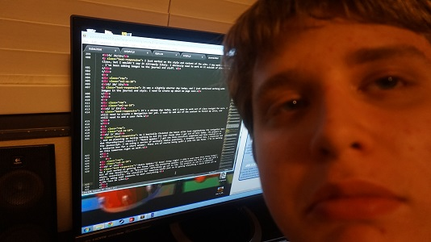

Today, I practiced using some basic Javacript commands, like console log, alert and prompt through the screen casts my teacher provided on Moodle. I also learned a bit about naming variable as well as what variables are. Variables are defined as containers that store data values, which often relates to basic algebra in its use to hold values. I also learned about numbers in Javascript, which can be used with decimals and are often used in variables. Unlike many programming languages, Javascript doesn't define different types of numbers. Strings are used to store characters that can be expressed in the console in in the site itself, and is always accomodated by quotes, which can be single or douvle spaced. I am excited to use this new langauge, and maybe even incorporate it into the project I made in Semester one.
Today was a shorter class, like every thursday, and I just worked on modifying the Javascript rainbow practice an changing the colors as well as researching some Javascript. I also found how this could be done with css, though it looked like a much more text-heavy process. We were introduced to a moodle forum for our class that we can use to ask and find questiosn. I may not use this local forum too much, but it may be useful from time to time.
It was a skinny monday today, and We were introduced to this weeks screencasts on moodle, which focused on arrays(varables containing multiple values). Our job in the practice is to create a series of prompts within an array that the user can type in, which will affect the values(strings of the array, and what appears in the console and the site. I got started with this practice and it was a bit confusing. Im hoping to finish and practice more next class.
I worked on the array practice today and completed it. I also went back to the rainbow challenge to examine its arrays and how they work. There is no new moodle work aside from a short journal review video that I'm about to watch. I feel good about the variables in Javascript that we having practiced thus far, and look forward to learning for of this new language.
As opposed to using Moodle to practice using the screencasts(like the loop practice), we took the time to reinforce some of the things we have leanred to use in Javascript so far. We practice using a few math elements, and a bit of practice with variables using a glue-in "cheatsheet". I plan to work with loops tonight and tomorrow as I await the new work for the week!
Today was a shorter day(modays always are) and we worked with a cheat sheet to clarify a few definitions that people may not have otherwise known of. For me, it was really just a review. We talked about different lines using variables, prompts, alerts and messages.
The last few journal entries were lost in the greater land of 2015 (and we are still using windows seven?But for real, get aero off these machines. They would run much better with windows seven basic), anyways, I just worked with unshifts and such to incorporate new foods into the array challenge , which I also incoroporated loops into.
There was a bit of loop practice today. We did a small glue in based around both for and while loops. After this, I just worked on practicing the "logic" challenge. I was trying to update the browser after every prompt was entered.
I was introduced to the new/first project this semester. It will involve the things I have learned in Javascript so far. The project will amount to using loops,variables and arrays. Prompts are going to need to be incorpotaed and style with be done thotugh Javascript.
This was a very simple work period for our projects because there was a subsitute. I used some of the time to study and review for another class, but spend most of the class working the curretn Javascript project. I want to work with this project at home soon.
We just worked today. I spent some time, as usual, studying, and spent the rest of my time getting into the project. I plan to work at home tonight and finish my main style for the project over the weekend.
As I said on thursday, I wanted to work on my project at home, and I did so. I worked on creating/simulating lists in symetrical boxes. I worked on studying and working this period, as usual. I just worked on some simple style for footers and buttons in the project.
Today, I just worked with some color in javascript and started messing with a button that would show an image.
I turned the project in today, but it turns out that Mr. Jamieson didn't really expect us to get it in by then, as a lot of other people are still working on them. I just made a few finishing touches with css, but I had already figured out all of the javascript during the previous nights. I'm planning to have a great spring break!!!
Note that this project includes the rock paper scissors game mentioned in future journal entries.
This was a skinny monday afters spring break. Most people ust continued working on the projects, but I was watching a few screencasts on Moodle.
So I was introduced to my next small project using javascript. This project will be a simple rock,paper,scissors game, and it could be more image based, or text based. I just began praticing if...else statements a bit by using a button and some simple user prompts.
I just worked on watching a few screencasts and practicing a bit with if else statements to prepare for the rock,paper,scissors game, which I wanted to work on at home, but with the work load of other classes, paricularly advanced placement classes, may not permit the time to do so. I'll probably just be spending all of my time listning and experimenting with music.
Today was short, as all Mondays are. I just began working on the rock,paper scissors screencast that was supplied on moodle. Can you beleieve the nerve on this guy? He really thinks we can post a THIRTY MINUTE moodle screencast about the project??? Gosh, who does we think he is??? Anyways, I just began setting up the game today since I didnt need to study for the history quiz like I normally would.
I did have to srudy some for a history quiz, a particularly long one(35 questions compared to the normal 20) nad I tooke some time to look over my notes. As well as doing that this classs, I also set my game up into my playground site, and am planning to work on more style since I will have some out-of-class time on my hands.
I just contienued working on th old rock,paper,scissors project in class today. The class did run just a few minutes short due to the pep assembly, which was ok, kind meh, as always(for more of Soren's honest opinions, visit sorenKcornelll@wordbress.blogspot.adfly.gov)
I basically just worked on the styling of the rock,paper,scissors project, and still want to add to it a bit. It looks like we will be using Bootstrap to make our projects look "amazing."
I ended up getting introduced to bootstrap today, and how it works. I looked at three different sites: Parachute Monreal,Wschedzacy Blatystok (obviously a foreign site) and Kurekawa Wonderland. All of these sites were visually appealing, and each used specific style that I liked. Parachute montreal had alot of short, looping videos, which worked well, but didnt flow as well as I would have liked. The foreign site used a rally cool pictre that cycled through day and night, but it was a bit laggy. The last site, Kureka Wonderland, used a circular scroll bar for the video that introduces you to the site, and it can change into different shapes like a heart, but like the videos in parachute montreal, isnt extremely responsive.
I am supposed to contiue with bootstrap and the "grid project" today, but wasn't really able to work because, as I need to do sometimes, was stuying really hard for Ap world history and today's timed write.
I basically just worked with bootstrap and played around a bit alongside resizing a few pictures to make the mobile version look, well, decent. I just read through some forums as well and exlored what bootstrap styles can do.
I basically just worked with bootstrap and played around a bit alongside resizing a few pictures to make the mobile version look, well, decent. I just read through some forums as well and exlored what bootstrap styles can do.
I worked on the rock, paper ,scissors section of my website (which is embedding into the "playground site") during class today, and didn't get to using bootstrap css yet. This is something I want to do next class.
I worked on commenting code today as well as starting to style my RPS game using bootstrap , and converting the horizontal style to use rows.
I am basically just working on the rps game and my javascript site ( which are both part of the game project) to style them using bootstrap. I need to upload some of this information to Github soon.
Unfortunately, it was a shorter day today due to an assembly, so there wasn't as much time to work, but class was cut off by no more than 10-15 minutes. I just ended up working on studying for another class (Ap World History). The exam is in two weeks!
I wasn't here on this day because I was taking an exam (Environmental Science) at marshall ,which went pretty well ,but I had to walk all the way back to school whereas most other people either went went home, or had to take another exam (Ap psych). I missed all of my monday morning classes.
I'm glad the exam for world history is almost here because I'm tired of doing the work in here all the time. I basically just worked on preparing for timed write practice stuff. Sorry that I sit out and d other work sometimes. I know it a strange situation , because after all, I am sitting there writing page after page, and it probably seems like im using the time wisely, but i also understand that this is your class time (mine really) and that you can definitely asuume the value I take in your class over others. I assure you that any work I am not getting done in class will be done outside of class, and I'm sure you aren't very worried about me, because you know that I do my work, and that it's more than just about my grades, it's how I'm treating you as another perosn, and recognizing that this is time for me to focus on things you like to teach. Again, I'm sorry that I sometimes take time out to focus on other classes, even if it seems like it's okay to do so, because it likely will put you in the akward situation of "should I ask him about doing his work on the computer? I see that he is working on an Ap class, maybe thats more important." The exam is one week form today, and I'm glad it will all be over soon.
(Ap World History Memes Link)
We were introduced to our final projects today, a skinny monday. We will include many things, including a home/about myself kind of page, a page that hosts our RPS games as well as a journal page. Several things, like our scratch games and the javascript project #1 (playgrounds project), are additional things that could be implemented as well. It's basically one great big copy-paste project, but we all still need to create a consistent color theme alongside bootrapiing everything. Adding additional hover colors and colorchanges are all highly reccomeneded. I'm just not looking forward to deleting so much hard work in CSS for Bootstrap!
I tried creating a text based form for the first time today, and unfortunately, it didn't go so well. I basically had a problem with the object tag in Javascript when going through the moodle screencast, and also had trouble when we all went thorugh it in class. I plan to work on this outside of class by using w3 and stackflow.
I was Ap testing on this day, and them timed writes were great. Topics regarding Latin America cerca 1450s alongside the Silk roads and Indian ocean trade... excellent.
I was Ap testing on this day, and them timed writes were great. Topics regarding Latin America cerca 1450s alongside the Silk roads and Indian ocean trade... excellent. So I assume I just missed a work day, stuff to make up outside of class of course.
I basically need to work on compiling everything required for the final project, then I will work to create a universal color scheme as well as use bootstrap to organize everything. A user form still needs to be made after that.
The checklist for today is attempting to first connect all of the code and compile css into a universal file, and to add bootstrap. Secondly, I need a universal color palette across all of the pages. Next, I need some sort of navigation bar once I connect all the pages together.
The forms are still something I must keep in mind, but I don't actually know how to code for them yet. This is an essential aspect of the project ( for the "about me" page, but I am going to wait to learn about it independently, or I will find out how to create it myself(eventually).
I just worked on the style and content of the site. I may work outside of class, but I wouldn't say it extremely likely. I obviously need to work on it outside of class eventually. I've been adding images to the journal and stuff.
It was a slightly shorter day today, and I just continued working with images in the journal and style. I need to create my about me page soon.
It's a skinny day today, and I need to work out of class tonight for sure. I still need to create a Navigation bar yet. I need to add all of the content to finish my sites, and still need to add a user form.
So I basically finished the bases sitee last nigh(behides the navigation bar), and am planning on having nothing to but the user forms when i get out of here today. The project is due thursday(next class)!!! -"Noire Update:" I got the form structure completed and have started in on the javascript. I am using a series of multiple choice questions, a dropdown select box, a checklist and a textarea box for a short answer. These are of course being split p into the two forms. I'll be working on this tomorrow night as well.
"-Noire Update:"(I know! Crazy right! I didn't even have this class today!) So I just worked on getting the forms into the bootstrap modals, and enlisted the help of my dad with a bit of the JavaScript, so "bro-points" definitely go out to him. The project is now in a completed state, essentially. The checjlist for tomorrow would just to be giving everything a qucik brush ovr as well as addng some comments to most everything.
My Face Be Like:
So I'm just adding the finishing comments and such to my site before submitting it. I'll be doing this over the weeked as well as in class. As well as this I also want to add something that sort of "reacts" to my rps game. I was thinking either a changing font colot or an image, or maybe both. I'll definitely work on that over the weekend.